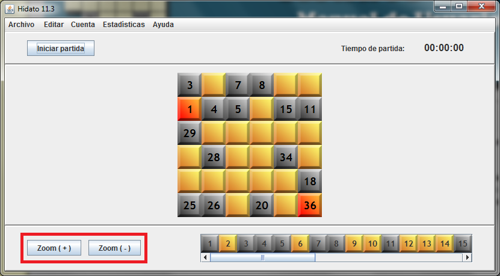
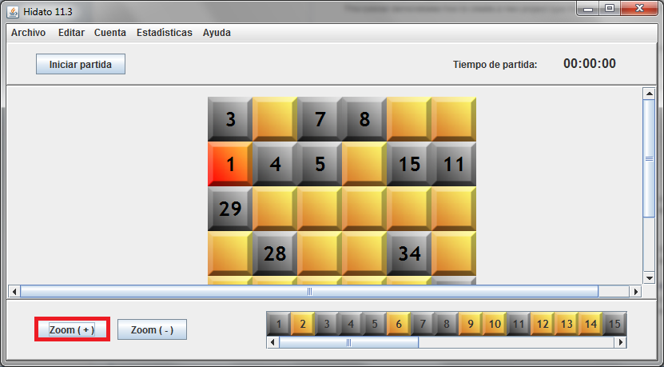
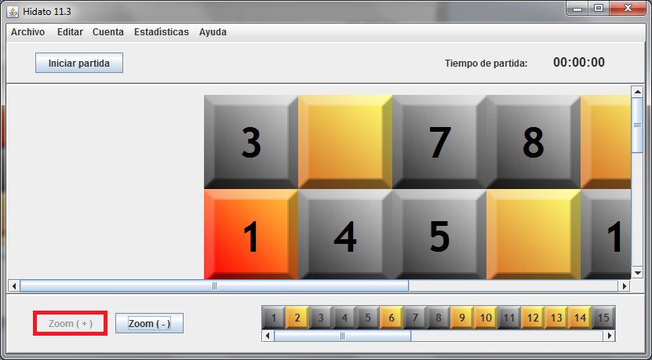
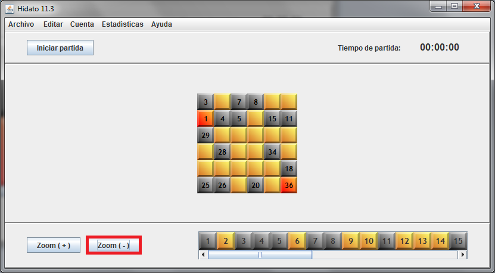
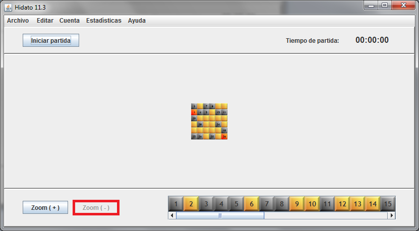

Es posible acercar y alejar el tablero mediante dos botones en la parte inferior izquierda:

Para acercarlo, podemos pulsar el botón 'Zoom ( + )':

Hasta llegar al máximo zoom permitido:

Análogamente, podemos pulsar 'Zoom ( - )' para alejar:

Hasta llegar al mínimo zoom permitido:
